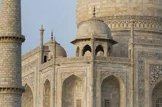

ARCHITECTURE

he Taj Mahal incorporates and expands on design traditions of Indo-Islamic and earlier Mughal architecture. Specific inspiration came from successful Timurid and Mughal buildings including the Gur-e Amir (the tomb of Timur, progenitor of the Mughal dynasty, in Samarkand),[20] Humayun's Tomb which inspired the Charbagh gardens and hasht-behesht (architecture) plan of the site, Itmad-Ud-Daulah's Tomb (sometimes called the Baby Taj), and Shah Jahan's own Jama Masjid in Delhi. While earlier Mughal buildings were primarily constructed of red sandstone, Shah Jahan promoted the use of white marble inlaid with semi-precious stones. Buildings under his patronage reached new levels of refinement.[21]
 Another view of the entrance
The temple faces east, and once had a water moat around it. This has been filled up. The fortified wall now runs around this moat. The two walls have ornate gateways called the gopurams. These are made from stone and display entablature. The main gateways are on the east side. The first one is called the Keralantakan tiruvasal, which means the "sacred gate of the Keralantakan". The word Keralantakan was the surname of king Rajaraja who built it. About a 100 metres (330 ft) ahead is the inner courtyard gopuram called the Rajarajan tiruvasal. This is more decorated than the Keralantakan tiruvasal, such as with its adhishthanam relief work narrating scenes from the Puranas and other Hindu texts.[29] The inner eastern gopuram leads to a vast courtyard, in which the shrines are all signed to east–west and north-west cardinal directions. The complex can be entered either on one axis through a five-story gopuram or with a second access directly to the huge main quadrangle through a smaller free-standing gopuram. The gopuram of the main entrance is 30 m high, smaller than the vimana.[13]The main temple-related monuments and the great tower is in the middle of this courtyard.[29] Around the main temple that is dedicated to Shiva, are smaller shrines, most of which are aligned axially. These are dedicated to his consort Parvati, his sons Murugan and Ganesha, Nandi, Varahi, Karuvur deva (the guru of Rajaraja Chola), Chandeshvara and Nataraja.[13] The Nandi mandapam has a monolithic seated bull facing the sanctum. In between them are stairs leading to a columned porch and community gathering hall, then an inner mandapa connecting to the pradakshina patha, or circumambulation path. The Nandi (bull) facing the mukh-mandapam weighs about 25 tonnes.[33] It is made of a single stone and is about 2 m in height, 6 m in length and 2.5 m in width. The image of Nandi is a monolithic one and is one of the largest in the country.[34]
Another view of the entrance
The temple faces east, and once had a water moat around it. This has been filled up. The fortified wall now runs around this moat. The two walls have ornate gateways called the gopurams. These are made from stone and display entablature. The main gateways are on the east side. The first one is called the Keralantakan tiruvasal, which means the "sacred gate of the Keralantakan". The word Keralantakan was the surname of king Rajaraja who built it. About a 100 metres (330 ft) ahead is the inner courtyard gopuram called the Rajarajan tiruvasal. This is more decorated than the Keralantakan tiruvasal, such as with its adhishthanam relief work narrating scenes from the Puranas and other Hindu texts.[29] The inner eastern gopuram leads to a vast courtyard, in which the shrines are all signed to east–west and north-west cardinal directions. The complex can be entered either on one axis through a five-story gopuram or with a second access directly to the huge main quadrangle through a smaller free-standing gopuram. The gopuram of the main entrance is 30 m high, smaller than the vimana.[13]The main temple-related monuments and the great tower is in the middle of this courtyard.[29] Around the main temple that is dedicated to Shiva, are smaller shrines, most of which are aligned axially. These are dedicated to his consort Parvati, his sons Murugan and Ganesha, Nandi, Varahi, Karuvur deva (the guru of Rajaraja Chola), Chandeshvara and Nataraja.[13] The Nandi mandapam has a monolithic seated bull facing the sanctum. In between them are stairs leading to a columned porch and community gathering hall, then an inner mandapa connecting to the pradakshina patha, or circumambulation path. The Nandi (bull) facing the mukh-mandapam weighs about 25 tonnes.[33] It is made of a single stone and is about 2 m in height, 6 m in length and 2.5 m in width. The image of Nandi is a monolithic one and is one of the largest in the country.[34]